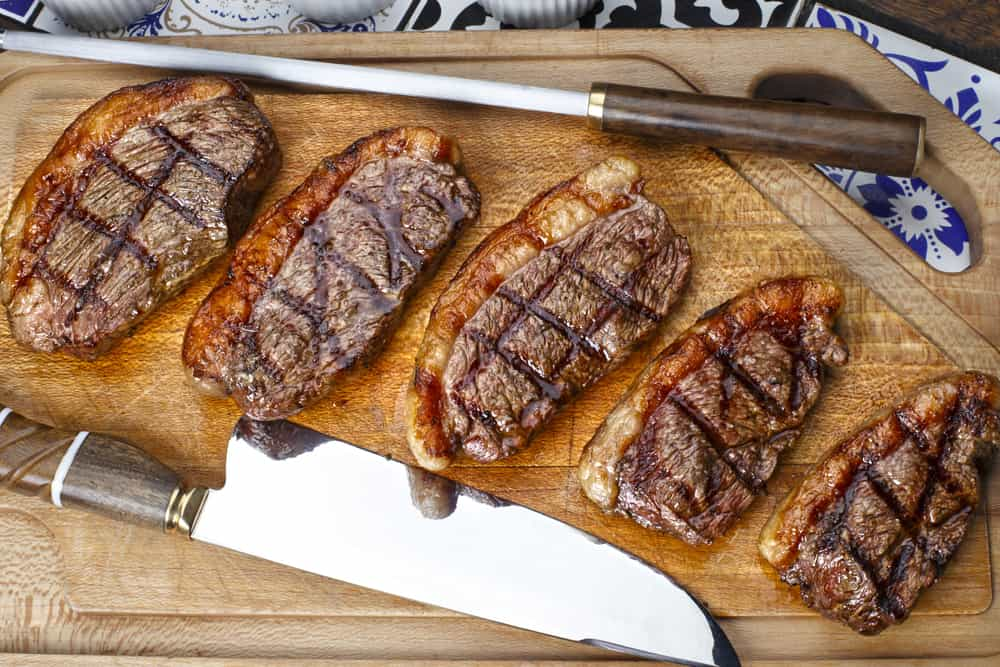

Picanha Steak

Popular in Brazil, Picanha is one of the most flavorful cuts of beef.
Taken from the top of the rump, you might know of it as a rump cover, rump cap, sirloin cap or
even culotte steak. It is triangular in shape and surrounded by a thick layer of fat called a fat
cap. Because it is not an overused muscle, this cut remains beautifully tender.
Ingredients:
- Picanha (alternatively known as "Sirloin Cap")
- Red's Sea Salt
- Chimichurri
- Charcoal & Charcoal Grill (for best result)
Steps:
- Before starting the process, make sure that your meat cuts are 2-3 inches thick
- If meat has been refrigerated, take it out 1hour before starting
- Preheat your grill at 300°F or High setting.
- Cut fat layer to about 1/4".
- Rub in sea salt (Picanha is naturally filled with flavor and it's advised to cook
as is, though a BBQ dry rub is a good selection for those who must season).
- If using a gas grill, turn off all the burners except for the furthest burner from the
steak. It is recommended to cook the meat with the lid closed, for around 20-25 minutes,
turning them every 5-7 minutes.
- If using a charcoal grill, make sure the cooking temperature is at approximately 300°F.
Skewer the meat and lay on the coals.
- Remove the steaks from the heat when it reaches an internal temperature of 130-135°F for
medium-rare doneness. If you prefer medium doneness, leave it until it reaches 135-140°F
internal temperature.
- For best taste, let the meat rest for 10-15minutes to ensure the juices don't immediately
evacuate.